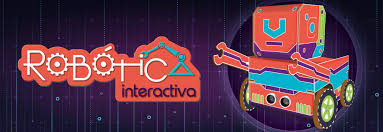
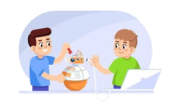
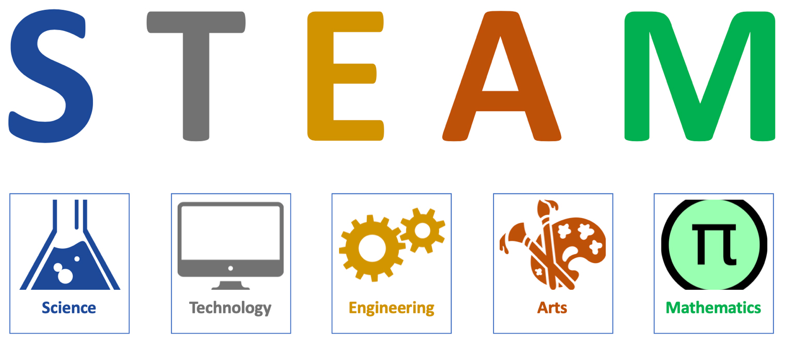
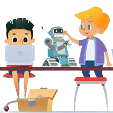
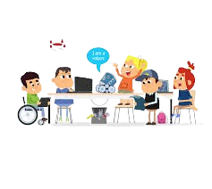
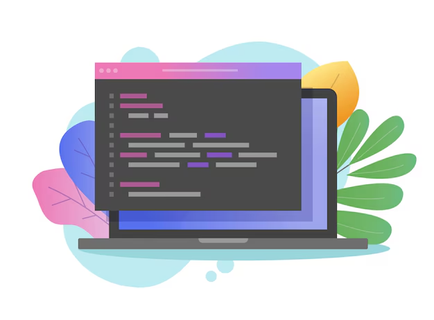

🤖 La robótica en la educación se refiere al uso de robots como herramientas de aprendizaje en diversas áreas del conocimiento que permiten a los estudiantes interactuar con tecnologías tangibles, promoviendo el pensamiento lógico, la resolución de problemas y la creatividad, además se utiliza en diferentes niveles educativos para enseñar ciencia, tecnología, ingeniería y matemáticas (STEM), y también en áreas como la programación, diseño y fabricación. (Ruiz, 2007).
Elementos clave de la robótica en la educación
Interactividad - Aprendizaje activo

Es un enfoque educativo que le permite a los estudiantes vivir experiencias de aprendizaje activo e integrar diversas áreas de conocimiento a fin de desarrollar competencias para la vida y conectarse con las dinámicas y desafíos del contexto local y global.
Desarrollo de habilidades

Los estudiantes son participantes activos que pueden programar, construir y manipular robots. Esta interacción con los dispositivos promueve el aprendizaje experiencial, donde los estudiantes aprenden haciendo y explorando.
STEM

Fomenta el desarrollo de habilidades como la programación, el diseño mecánico y la electrónica, pero también promueve competencias transversales importantes, como el pensamiento crítico, la creatividad, la colaboración, y la resolución de problemas.
Inmersión en la cultura digital

Permite a los estudiantes prepararse para un entorno cada vez más digitalizado, donde las habilidades tecnológicas son fundamentales para la integración de la inteligencia artificial (IA) y la automatización, que son parte del futuro del mercado laboral.
Inclusión y diversidad

La robótica puede adaptarse a diferentes niveles de habilidad, desde principiantes hasta estudiantes más avanzados; Además, ha demostrado ser útil para estudiantes con necesidades educativas especiales (NEE), facilitando el aprendizaje a través de la manipulación y experimentación.
Programación

La programación es una herramienta poderosa que nos permite resolver problemas a través de instrucciones comprensibles para las computadoras. Sin embargo, para programar correctamente, es imprescindible adoptar un enfoque lógico y estructurado, lo cual implica que programar no solo consiste en escribir código, sino que requiere primero comprender el problema y diseñar una solución adecuada.
📚 Modelos Pedagógicos que Sustentan el Uso de la Robótica en la Educación
Constructivismo: Es la Teoría pedagógica que sostiene que el conocimiento se construya activamente por parte de los estudiantes a través de la interacción de su entorno.
En la robótica educativa este enfoque refleja que los estudiantes construyan su comprensión de la tecnología y los conceptos STEM a medida que diseñan, programan y trabajan con robots.
Construccionismo: Seymour Papert, el construccionismo enfatiza la importancia de la creación tangible como medio para el aprendizaje.
En robótica educativa significa que los estudiantes no solo adquieren conocimientos a través de la programación y la interacción con robots, sino también construyen objetos físicos que pueden ver y manipular, lo que fomenta la comprensión profunda y la resolución de problemas de manera más efectiva.